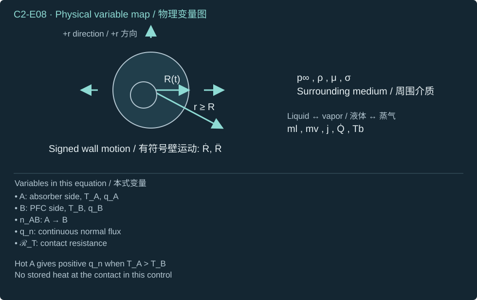
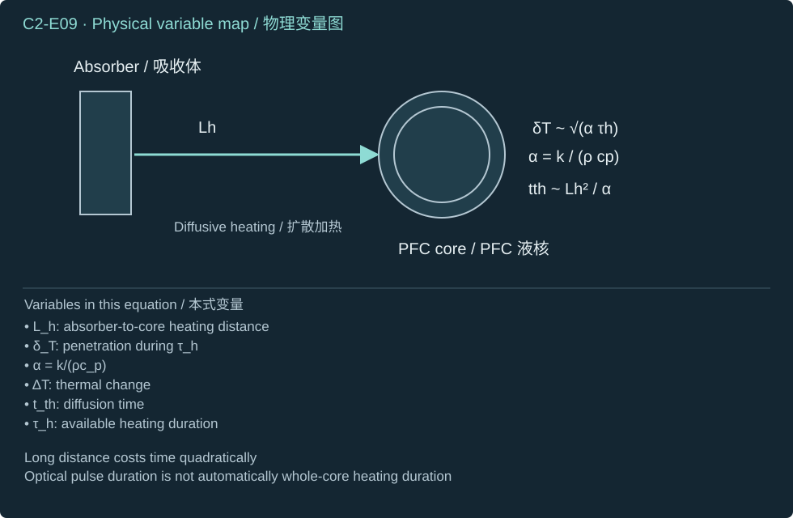
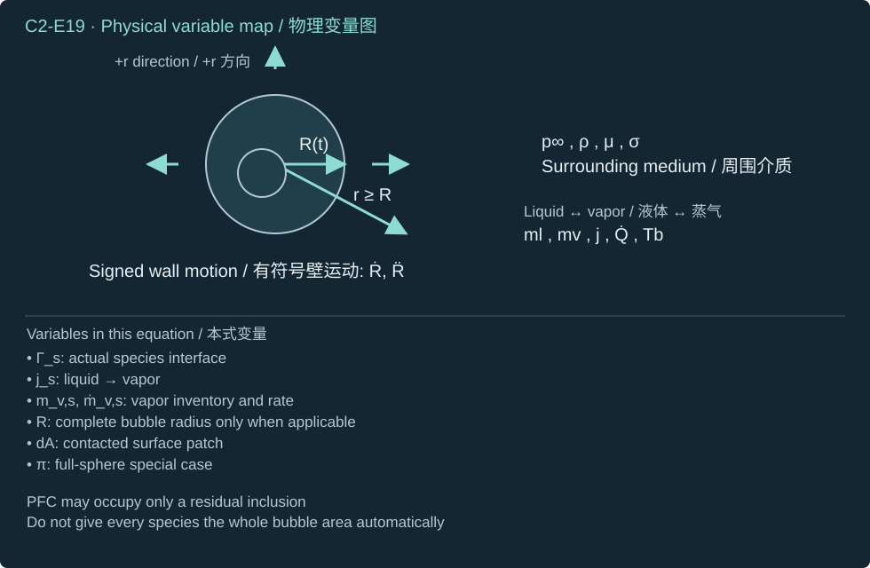
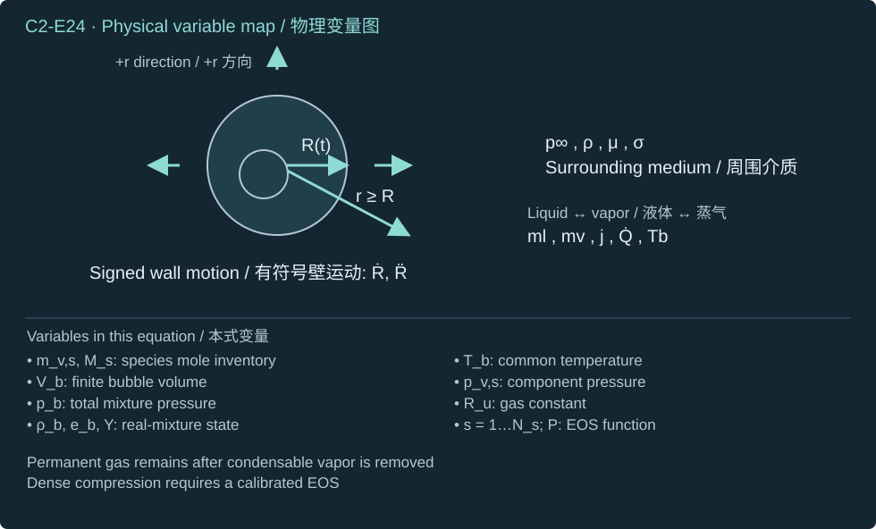
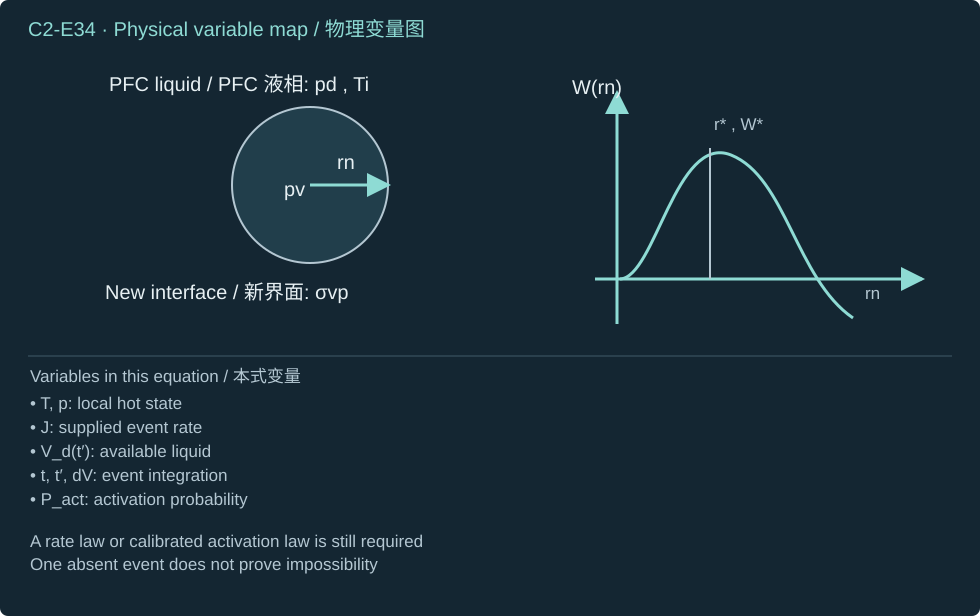

Laser energy deposition, nucleation, heat and mass transfer, PFC material properties, and finite-inventory phase thermodynamics.
激光能量沉积、成核、传热传质、PFC物性与有限存量相变热力学。
Under matched conditions, what does PFC actually change—and what does it not guarantee?
在匹配条件下，PFC究竟改变了什么，又不能保证什么？
Derive optical energy, heat delivery, activation, finite phase mass and energy, and a pressure closure; compare PFC with a matched aqueous control.
推导光能、热输送、激活、有限相质量与能量及压力闭合，并将 PFC 与匹配水性参照比较。
Awaiting your explanations / 待您解释
What this chapter enables
本章学习目标
Calculate incident, intercepted, absorbed, and core-delivered energy without double counting.
计算入射、截获、吸收及送达核心能量，避免重复计入。
Explain why low bulk boiling temperature is insufficient for nanoscale laser activation.
解释为什么低体相沸点不足以保证纳米尺度激光激活。
Close phase mass and energy with finite inventory, correct normal signs, and a stated EOS.
以有限库存、正确法向符号及明确 EOS 闭合相质量与能量。
Distinguish an inventory-state radius from dynamical maximum radius and useful jet output.
区分库存状态半径、动力学最大半径与有用射流输出。
Prerequisite. Chapter 1: nonlinear bubble motion, carrier inertia, pressure work, and the role of geometric asymmetry.
先修知识。 第一章：非线性气泡运动、载液惯性、压力功及几何不对称的作用。
2. From laser absorption to a finite PFC bubble
2. 从激光吸收到有限 PFC 气泡
The objective is to determine what pressure history one laser-heated PFC inclusion can supply to the carrier liquid. Chapter 1 supplied the mechanical response to a prescribed bubble pressure; this chapter supplies the optical, thermal, activation, mass, and energy equations needed to calculate that pressure. The useful jet is usually predominantly carrier liquid. PFC density belongs to the core inventory; carrier density belongs to the surrounding inertia. A lower activation threshold is a possible benefit, but it does not establish a larger emitted momentum or a more repeatable transfer.
System and conventions. Start with a spherical, initially liquid PFC core in an aqueous carrier, initially at temperature T0 (K) and carrier pressure pc (Pa). The beam travels in the positive depth direction z (m); transverse distance from its axis is r (m). Time t=0 (s) precedes the pulse. Optical intensity entering an absorber is prescribed, the initial temperature field is prescribed, the sphere center has zero radial heat flux by symmetry, and the outer thermal boundary is a stated reservoir or an explicitly resolved carrier. At each material contact, enforce flux continuity and the declared contact law. All thermodynamic pressures are absolute. At a liquid–vapor interface, the dimensionless unit normal n points from liquid into vapor; evaporation flux is positive in this direction. For a bubble inside liquid this normal points inward, opposite the dimensionless outward radial unit vector er.
Assumptions are introduced in stages. The first optical control neglects scattering and nonlinear absorption. The pre-phase heat equation assumes negligible pressure-work and viscous heating within each nearly incompressible phase. The nucleation calculation adopts a locally isothermal capillarity model with a nucleus much smaller than its available liquid core. The final uniform-bubble closure assumes a common bulk temperature and uses an ideal mixture only when dilute. These are different approximations, not a single universally valid PFC model. A micron-scale teaching core is not a nanodroplet.
Pulse energy incident per unit area; it is a time integral, not an instantaneous irradiance.
单位面积接收的脉冲能量；是时间积分，而非瞬时辐照度。
I
Laser irradiance
激光辐照度
W m⁻²
Instantaneous optical power per unit area; integrating it over the pulse gives fluence.
单位面积上的瞬时光功率；对脉冲历时积分得到能量面密度。
EL
Incident laser-pulse energy
入射激光脉冲能量
J
Total incident optical budget before interception, reflection and absorption losses.
截获、反射及吸收损失之前的总入射光能预算。
Eabs
Absorbed optical energy
吸收光能
J
Energy actually deposited in the defined absorber; not necessarily heat delivered to PFC.
实际沉积在指定吸收体中的能量；不一定等于传给 PFC 的热量。
T
Thermodynamic temperature
热力学温度
K
Local state in the heat/phase balance; phase equilibrium and rate laws require its history.
热／相平衡中的局部状态；相平衡与速率规律需要其时间历程。
ρ
Local material mass density
局部材料质量密度
kg m⁻³
The material or phase must be specified; PFC heating density and carrier inertia density differ.
必须指定材料或相；PFC 加热密度与载液惯性密度不同。
cp
Specific heat capacity at constant pressure
定压比热容
J kg⁻¹ K⁻¹
Sensible-heat capacity per mass; constant-property examples are declared approximations.
单位质量的显热容量；恒物性例题是明确声明的近似。
k
Thermal conductivity
导热系数
W m⁻¹ K⁻¹
Relates temperature gradient to conductive heat flux, not to fluid permeability.
关联温度梯度与导热热流，不是流体渗透率。
α
Thermal diffusivity
热扩散率
m² s⁻¹
Conductivity divided by volumetric heat capacity; determines thermal communication time.
导热系数除以体积热容量；决定热传播时间。
a0
Initial liquid-PFC core radius
初始液态 PFC 核半径
m
Defines the initial finite liquid inventory; not the growing vapor-cavity radius.
确定初始有限液体存量；并非增长中的蒸气腔体半径。
R
Subsequent bubble radius
后续气泡半径
m
Geometric cavity coordinate after activation; by itself it does not determine phase mass.
激活后的几何空腔坐标；仅凭它无法确定各相质量。
Vb
Bubble volume
气泡体积
m³
Volume enclosing the vapor/gas mixture; requires mass, temperature and pressure closure.
蒸气／气体混合物所在体积；需要质量、温度与压力闭合。
ml
Remaining liquid-PFC mass
剩余液态 PFC 质量
kg
Liquid reservoir remaining after signed interfacial phase transfer.
带符号界面相变传递之后剩余的液体储量。
mv
PFC vapor mass
PFC 蒸气质量
kg
Vapor inventory, constrained by the original core and any stated transport sources.
蒸气存量，受原始液核及所声明传输源约束。
js
Signed species phase-transfer mass flux
带符号组分相变质量通量
kg m⁻² s⁻¹
Mass crossing unit interfacial area per time; the chosen evaporation direction fixes its sign.
单位界面面积每单位时间穿过的质量；所选蒸发方向确定其符号。
σpc
PFC–carrier interfacial tension
PFC—载液界面张力
N m⁻¹
Acts at the original liquid-droplet boundary; not the vapor–PFCnucleation tension.
作用于原始液滴边界；不是蒸气—PFC成核张力。
σvp
Vapor–liquid-PFCinterfacial tension
蒸气—液态 PFC界面张力
N m⁻¹
Belongs to the vapor nucleus inside PFC and its capillary/nucleation cost.
属于 PFC 内部蒸气核及其毛细／成核代价。
Ub
Bubble internal energy
气泡内能
J
Thermodynamic energy of the cavity contents; changes by heat, phase enthalpy and boundary work.
腔内物质的热力学能量；由热、相变焓与边界功改变。
hs
Transported species specific enthalpy
输运组分比焓
J kg⁻¹
Enthalpy carried with unit transferred species mass; phase and state must be specified.
单位传递组分质量携带的焓；必须指定相与状态。
Ms
Species molar mass
组分摩尔质量
kg mol⁻¹
Converts species mass to amount of substance in the chosen equation of state.
在所选状态方程中，将组分质量换算为物质的量。
Lv,s
Species-specific latent heat of vaporization
组分汽化比潜热
J kg⁻¹
Phase-change energy per converted species mass; the interface state and approximation are specified.
单位转化组分质量的相变能量；需指定界面状态与近似。
Ru
Universal molar gas constant
通用摩尔气体常数
J mol⁻¹ K⁻¹
Used with amount of substance, not silently with mass-specific variables.
与物质的量共同使用，不能默默代入质量比形式。
A fair PFC comparison uses a PFC-free aqueous droplet with matched outer geometry, absorber location, absorbed energy, initial temperature, pressure, outlet, and target load path. Changing absorber concentration or spot size simultaneously cannot isolate a material benefit. Compare activation probability, emitted mass and velocity, useful impulse, intact-transfer yield, and reset. A persistently vapor-filled inclusion can activate readily while cushioning the subsequent collapse.
Step 1 — prescribe a Gaussian fluence.Fluence is the time integral of irradiance. Specify the transverse profile first, with the beam radius defined by the e−2 level. This convention must accompany a quoted spot size.
Symbols before Eq. (C2-E01).F(r) is incident fluence at radial coordinate r≥0 (J m⁻²); F0>0 is on-axis fluence (J m⁻²); w>0 is the transverse e−2 beam radius (m); exp is the natural exponential.
Fluence varies across the beam; the quoted radius fixes its definition.
能量密度沿光束横向变化；所给半径明确其定义。
Step 2 — integrate over the illuminated plane. Annuli have area 2πrdr. Set the dimensionless integration variable x=2r2/w2, so dx=4rdr/w2 and both limits remain zero and infinity. The positive exponential is integrable; the upper endpoint vanishes.
Symbols before Eq. (C2-E02).EL is total incident pulse energy (J); F0 is on-axis fluence (J m⁻²); w>0 and r≥0 are beam radius and transverse distance (m); x=2r2/w2 is a dimensionless substitution variable; π is the circular constant; ex is the exponential; ∫ and brackets denote integration and endpoint evaluation.
The Gaussian energy follows from summing annular contributions.
高斯光束能量来自环带贡献之和。
Step 3 — calculate interception rather than assuming all light hits the actuator. For a centered circular absorber aperture of radius ba (m), terminate the same integral at that radius and divide by total beam energy. An off-axis droplet or irregular layer needs its actual area integral.
Symbols before Eq. (C2-E03).fgeo is intercepted energy fraction (dimensionless), with label geo meaning geometry; ba≥0 is centered absorber-aperture radius (m); F(r) is Gaussian fluence (J m⁻²); r is transverse integration distance (m); EL>0 is total pulse energy (J); w>0 is beam radius (m); π is the circular constant; exp and ∫ denote exponential and integration.
The aperture removes the outer annuli from the useful incident energy.
窗口使外侧环带不再计入有用入射能量。
Step 4 — restore time. Normalize the temporal pulse shape so that its integral is one. A rectangular pulse has a shape equal to the reciprocal pulse duration while the pulse is on. Thus a shorter pulse raises irradiance at the same fluence; it does not increase incident energy.
Symbols before Eq. (C2-E04).f(t)≥0 is normalized pulse shape (s⁻¹); t is time (s); I(r,t) is irradiance (W m⁻²); F(r) and F0 are local and central fluence (J m⁻²); r is transverse distance (m); Ipeak is central peak irradiance (W m⁻²); τL>0 is rectangular laser-pulse duration (s), with L naming laser; ∫ is time integration.
A pulse waveform specifies when the energy is deposited.
脉冲波形规定能量何时沉积。
Step 5 — solve absorption-only transport. Conservation of beam power in a thin slab says that the decrement of irradiance equals deposited heat per unit volume times thickness. With constant positive absorption coefficient, separate the irradiance differential, integrate from the entry face to depth, and exponentiate. The optical transit is treated as instantaneous on the thermal timescale.
Symbols before Eq. (C2-E05).z≥0 is absorber depth (m); ∂z denotes differentiation in depth; I(z)>0 and Iin>0 are local and entry irradiance (W m⁻²), with in labeling entry; μa>0 is constant absorption coefficient (m⁻¹), with a labeling absorption; Qabs is volumetric optical heat deposition (W m⁻³); I′ and z′ are integration dummy variables with the same units as I and z; ∫ denotes integration; ex denotes the exponential. Zero input gives identically zero deposition without dividing by irradiance.
The absorber deposits heat over a finite optical depth.
吸收体在有限光学深度内沉积热量。
Step 6 — integrate deposited heat. Integrating in depth turns the volumetric source back into absorbed power per area. Integrating the normalized pulse and then the intercepted area gives the total energy. With one front-face reflected fraction, multiply the fraction entering the slab once. The effective absorptance below already includes this reflection; it must not be multiplied by a second reflection correction.
Symbols before Eq. (C2-E06).ha>0 is uniform absorber thickness (m); z is depth (m); Qabs is volumetric heat source (W m⁻³); Iin is irradiance entering the slab (W m⁻²); μa is absorption coefficient (m⁻¹); Rλ∈[0,1] is front-face reflected energy fraction at wavelength λ (m); Aλ is effective incident-light absorptance (dimensionless); fgeo is intercepted fraction; EL,Eabs are incident and absorbed energies (J); Ωa is absorbing volume, dV its volume element (m³); t,dt denote time and its element (s); ∫ is integration; ex is the exponential.
Interception, reflection, and internal absorption each act once.
截获、反射与内部吸收各作用一次。
Checks are physical: absorptance tends to zero as optical thickness tends to zero, and tends to the entering fraction for an optically thick layer. Qabs has units W m⁻³ because absorption coefficient multiplies W m⁻². Its volume–time integral has units J. The model fails when scattering, multiple reflections, saturation, or plasma formation matters. A boundary heat source may replace the resolved layer if it represents the same energy; adding both counts that energy twice.
物理检验如下：光学厚度趋于零时吸收率趋于零；薄层光学足够厚时，吸收率趋于进入薄层的比例。吸收系数乘以 W m⁻²，使 Qabs 的单位为 W m⁻³；其体积–时间积分的单位为 J。散射、多次反射、饱和或等离子体形成重要时，该模型失效。若边界热源代表相同能量，可以替代解析薄层；同时添加两者会重复计能。
Optical activation has been observed in specified absorber-containing PFC formulations. Strohm et al. used PbS-loaded PFP and a 1064 nm laser; Wei et al. used gold-containing PFH nanoemulsion. These primary studies establish optical routes, not a universal optical threshold, a liquid-jet speed, or a transfer yield. Absorber position and formulation remain experimental inputs. [R6][R7]
2.2 Heat must reach the core on the event timescale
2.2 热量必须在事件时间尺度内到达核心
Step 7 — apply thermal-energy conservation. Before phase change, a material parcel gains sensible enthalpy through conduction and optical deposition. In a nearly incompressible phase with constant properties, negligible viscous heating and negligible pressure-work, use heat capacity at nearly constant pressure. Moving fluid contributes material advection; a solid absorber uses zero velocity. The divergence term is heat influx because conductive flux points down the temperature gradient.
Symbols before Eq. (C2-E07).q is conductive heat flux (W m⁻²); k>0 is thermal conductivity (W m⁻¹ K⁻¹); T is temperature (K); ρ>0 is phase density (kg m⁻³); cp>0 is constant specific heat capacity (J kg⁻¹ K⁻¹); t is time (s); u is material velocity (m s⁻¹); Qabs is optical heating (W m⁻³); D/Dt is the material derivative; ∂t is the fixed-position time derivative; ∇ and ∇⋅ are spatial gradient and divergence (m⁻¹); the centered dot here is a vector contraction, not punctuation.
Heating the absorber and heating the PFC are separate parts of the thermal path.
加热吸收体与加热 PFC 是热路径中的不同环节。
Step 8 — close material contacts. At an absorber–core contact, take the normal from material A into material B. Positive normal heat flux travels from A to B. With no interfacial thermal storage, the flux is continuous; a nonnegative contact resistance permits a temperature jump. A zero resistance gives continuous temperature. This contact is not the liquid–vapor Stefan interface below.
步骤 8——闭合材料接触条件。 在吸收体–核心接触面，将法向从材料 A 指向材料 B。正法向热通量从 A 流向 B。无界面热储存时，热通量连续；非负接触热阻允许温度跳跃。热阻为零时温度连续。该接触面不同于后文的液–汽 Stefan 界面。
Symbols before Eq. (C2-E08).qn is signed normal heat flux (W m⁻²); qA,qB are conductive fluxes in materials labeled A and B (W m⁻²); nAB is unit normal from A into B (dimensionless); TA,TB are temperatures at the two contact sides (K); RT≥0 is area-specific thermal contact resistance (m² K W⁻¹); ⋅ denotes a vector dot product.
式（C2-E08）前的符号定义。qn 为带符号法向热通量（W m⁻²）；qA,qB 为标记 A、B 的材料内的传导热通量（W m⁻²）；nAB 为从 A 指向 B 的单位法向（无量纲）；TA,TB 为接触面两侧温度（K）；RT≥0 为单位面积热接触阻力（m² K W⁻¹）；⋅ 表示向量点积。
(C2-E08) · Thermal-contact boundary conditions
qn=qA⋅nAB=qB⋅nAB,TA−TB=RTqn

Contact resistance delays heat transfer even after the light has been absorbed.
即使光已被吸收，接触热阻仍会延迟热传递。
Step 9 — derive diffusion scales. In a motionless constant-property region, divide the heat equation by volumetric heat capacity. Substitute a temperature change over time and a second spatial derivative over heating distance. Equating those orders gives a diffusion time; solving it for distance gives penetration during a specified heating duration. These are scaling estimates, not a sharp thermal-front solution. The heating duration can include post-pulse conduction and need not equal the optical pulse width.
Symbols before Eq. (C2-E09).α>0 is thermal diffusivity (m² s⁻¹); k,ρ,cp are phase conductivity (W m⁻¹ K⁻¹), density (kg m⁻³), and specific heat (J kg⁻¹ K⁻¹); ΔT=0 is characteristic temperature change (K); Lh>0 is heating distance (m); tth is diffusion time estimate (s); τh>0 is available heating duration (s); δT is penetration estimate (m); ∼ means order-of-magnitude scaling, not equality.
(C2-E09) · Diffusive scaling derived from the heat equation
α=ρcpk,tthΔT∼αLh2ΔT,tth∼αLh2,δT∼ατh

Compare heat penetration with the distance to the PFC, not only with beam width.
应比较热渗透尺度与到达 PFC 的距离，而不只是光束宽度。
Worked thermal control. Declare PFP-like teaching coefficients: density 1630 kg m⁻³, heat capacity 654 J kg⁻¹ K⁻¹, and conductivity 0.050 W m⁻¹ K⁻¹. Only the rounded near-293 K heat capacity is tied to the cited NIST datum; the other constants are supplied teaching inputs. Use a 5 μm heating distance and a 10 ns heating duration.
热学参照计算。 声明近似 PFP 的教学系数：密度 1630 kg m⁻³、比热容 654 J kg⁻¹ K⁻¹、导热系数 0.050 W m⁻¹ K⁻¹。只有取整的近 293 K 比热容对应所引 NIST 数据；其余常数是给定教学输入。取加热距离为 5 μm，加热时长为 10 ns。
Symbols before Eq. (C2-E10).αd is declared PFC-liquid diffusivity (m² s⁻¹), with d labeling droplet liquid; tth is diffusion-time estimate (s); δT is penetration estimate (m). The numerator 0.050 is conductivity in W m⁻¹ K⁻¹; 1630 is density in kg m⁻³; 654 is specific heat in J kg⁻¹ K⁻¹; 5×10−6 is distance in m; 10−8 is duration in s. Powers are numerical exponents, and ∼ denotes a scale estimate.
A short pulse does not imply uniform temperature in a micron-scale core.
短脉冲不意味着微米级核心内温度均匀。
The penetration estimate is only 0.00433 of the chosen heating distance. Without distributed heat deposition, the 10 ns pulse cannot justify uniform core temperature. Reducing distance to 100 nm reduces this constant-coefficient diffusion scale to 0.213 μs, still longer than 10 ns. Hotspots, aggregation, and shell contact can matter more than a bulk-average temperature. Optical breakdown is a distinct source mechanism and requires optical conditions and observations that support it; it is not added to a thermal-vaporization model by default.
2.3 Volatility, confinement, and activation are different
2.3 挥发性、约束与激活并不相同
Step 10 — distinguish initial liquid pressure from ambient pressure. A spherical PFC–carrier interface carries capillary stress. Add a declared shell-supported excess pressure when the shell has one. This static reference ignores rapid acceleration and shell-rate effects, which need a dynamic constitutive law.
Symbols before Eq. (C2-E11).pd is initial PFC-liquid pressure and pc carrier pressure (Pa); a>0 is PFC-core radius (m); σpc≥0 is PFC–carrier interfacial tension (N m⁻¹), with pc naming those phases; Πshell is shell-supported excess pressure (Pa); ≃ is the static spherical approximation. The numerical interfacial tension 0.020 is a teaching input in N m⁻¹, the radii are in m, and 1 kPa = 1000 Pa.
The smaller inclusion has a larger capillary contribution at the same tension.
界面张力相同时，较小夹杂的毛细压力贡献更大。
Use named compounds rather than a generic “PFC boiling point.” The following NIST entries refer to neat compounds. The displayed boiling ranges are different tabulated datasets, not uncertainty bands for a formulation. Convert molar heat capacity or enthalpy to mass-specific values by dividing by the stated molar mass. [R8][R9][R15]
Retain temperature and dataset; do not transfer this value to every PFC.
保留温度及数据集；不能将此值套用到所有 PFC。
Water: H₂O; molar mass 0.0180153 kg mol⁻¹
水：H₂O；摩尔质量 0.0180153 kg mol⁻¹
Normal-boiling compilation approximately 373.17 K.
正常沸点汇编约为 373.17 K。
PFC-free thermal comparison at matched temperature and pressure.
在相同温度与压力下的不含 PFC 热学参照。
Step 11 — calculate equilibrium vapor pressure within the correlation domain. NIST tabulates the Barber–Cady Antoine fit for PFP. The logarithm acts on pressure divided by one bar, so its argument is dimensionless. The fit coefficients are empirical, not derived from the optical heating model. [R8]
步骤 11——在关联式适用域内计算平衡蒸汽压。 NIST 列出了 PFP 的 Barber–Cady Antoine 拟合。对压力除以一巴后的比值取对数，故对数自变量无量纲。拟合系数是经验数据，并非由光加热模型推导。[R8]
Symbols before Eq. (C2-E12).psat,PFP(T) is bulk equilibrium PFP vapor pressure (Pa), sat labeling saturation; T is absolute temperature in the stated range (K); log10 is the base-ten logarithm. One bar equals 105 Pa. Empirical coefficient 4.2063 is dimensionless; 1103.454 K and 39.77 K have temperature units. The denominator is positive throughout the stated domain.
式（C2-E12）前的符号定义。psat,PFP(T) 为体相平衡 PFP 蒸汽压（Pa），sat 表示饱和；T 为所给范围内的绝对温度（K）；log10 为常用对数。一巴等于 105 Pa。经验系数 4.2063 无量纲；1103.454 K 和 39.77 K 具有温度单位。所给范围内分母为正。
The saturation curve concerns an equilibrium state, not automatic activation.
饱和曲线描述平衡状态，而不是自动激活。
Evaluating Eq. (C2-E12) gives 70.60 kPa at 293 K, 103.35 kPa at 303 K, and 204.33 kPa at 323 K. For water use its stated temperature interval, rather than extrapolating one coefficient set. The NIST water coefficients below produce 2.315 kPa at 293 K and 12.248 kPa at 323 K. These are calculated comparisons, not project measurements. [R15]
式（C2-E12）给出 293 K 时 70.60 kPa、303 K 时 103.35 kPa、323 K 时 204.33 kPa。水应使用对应温区的系数，不能外推同一组系数。下列 NIST 水系数给出 293 K 时 2.315 kPa、323 K 时 12.248 kPa。这些是计算对比，不是项目测量。[R15]
Symbols before Eq. (C2-E13).psat,w is bulk equilibrium water vapor pressure (Pa), w labeling water; T is temperature (K), restricted to either listed interval; log10 is the base-ten logarithm of pressure relative to one bar (105 Pa). The leading coefficients are dimensionless; all coefficients multiplied by K have temperature units. T/K is the numerical temperature in kelvin. No value is assigned to the 303–304 K gap by these two branches.
式（C2-E13）前的符号定义。psat,w 为体相平衡水蒸汽压（Pa），w 表示水；T 为温度（K），限定在两个所列区间之一；log10 为相对于一巴（105 Pa）的压力比值的常用对数。首项系数无量纲；乘以 K 的系数具有温度单位。T/K 为以开尔文计的温度数值。这两个分支未给出 303–304 K 间隙的值。
(C2-E13) · Verified empirical water property correlations
Water provides a matched-temperature reference, not a guaranteed vapor reservoir.
水提供同温参照，却不是有保证的蒸汽库。
At 323 K and 100 kPa carrier pressure, the declared 5 μm shell-free PFP core has initial liquid pressure 108 kPa, below the 204.33 kPa equilibrium PFP reference. The 100 nm core has 500 kPa liquid pressure, above it. Thus the same temperature can provide positive bulk driving for the larger core and no positive driving in this smaller-core control. This conclusion uses the stated constant tension and neglects shell stress; neither temperature is a measured onset threshold.
Step 12 — construct the capillarity free energy. Define a vapor nucleus inside the liquid PFC, not a whole-core interface. Under the local isothermal, bulk-reservoir approximation, forming the new interface costs tension times area; replacing liquid by favorable vapor gains driving pressure times volume. The vapor–PFC tension is not the PFC–carrier tension in Eq. (C2-E11).
Symbols before Eq. (C2-E14).Δpn is vapor-nucleation driving pressure (Pa), n labeling nucleation; psat,PFC(Ti) is bulk PFCsaturation pressure at local interface temperature Ti (Pa and K); pd is PFC-liquid pressure (Pa); W(rn) is nucleus formation free energy (J); rn≥0 is vapor-nucleus radius (m); σvp>0 is vapor–PFC tension (N m⁻¹), vp naming the interface; π is the circular constant. The model assumes fixed Ti,pd, and rn small compared with the PFC core.
The barrier belongs to creating a new internal vapor interface.
势垒来自生成新的内部蒸汽界面。
Step 13 — find the stationary point and its branch. Differentiate the two powers of nucleus radius. For positive driving pressure, the nonzero stationary radius is obtained by dividing the bracket by positive radius and driving pressure. The second derivative there is negative, so it is a barrier maximum. For nonpositive driving pressure, the derivative is positive for every positive radius and there is no positive critical-radius branch in this model.
Symbols before Eq. (C2-E15).W is nucleus free energy (J); rn>0 is nucleus radius (m); σvp>0 is vapor–PFCinterfacial tension (N m⁻¹); Δpn is fixed driving pressure (Pa); r∗ is the positive critical radius (m), with star labeling the stationary point and requiring Δpn>0; d/drn is radius differentiation, ∣r∗ denotes evaluation there, and π is the circular constant. The first derivative has units J m⁻¹ and the second J m⁻².
The stationary point is a maximum, not a stable equilibrium nucleus.
该驻点是最大值，不是稳定平衡汽核。
Step 14 — substitute the critical radius explicitly. Square and cube the positive radius, then subtract the two coefficients. The barrier falls as driving pressure increases, but remains positive at any finite positive driving pressure and positive tension.
Symbols before Eq. (C2-E16).W∗=W(r∗) is critical-nucleus free-energy barrier (J), with star labeling the critical value; σvp>0 is vapor–PFCinterfacial tension (N m⁻¹); Δpn>0 is driving pressure (Pa); π is the circular constant; superscripts 2 and 3 are powers. This result inherits the homogeneous, locally isothermal, small-nucleus assumptions.
Positive superheat driving does not make the nucleation barrier vanish.
正的过热驱动力并不会使成核势垒消失。
The units check is (N/m)3/Pa2=Nm=J. The critical radius scales as tension divided by pressure, hence has units m. If the computed nucleus is comparable to the core radius, the reservoir approximation fails. Absorber surfaces, shell defects, dissolved gas, and wetting can replace homogeneous nucleation by a heterogeneous route. A seed imposed after the pulse defines a post-nucleation calculation; it is not a prediction of onset.
Step 15 — turn a rate into a probability only under a stated stochastic model. For independent Poisson nucleation events, survival over a small interval loses the expected number of events times its current value. Integrate its logarithmic derivative with initial survival one. The result applies even when the rate varies in space and time; it does not determine that rate. A formulation-specific empirical activation law is preferable when the homogeneous premise is false.
Symbols before Eq. (C2-E17).J(T,p)≥0 is prescribed nucleation rate (m⁻³ s⁻¹) at local temperature T (K) and pressure p (Pa); Vd(t) denotes the remaining liquid-core region and its volume (m³), d labeling droplet; Λ(t) is total event rate (s⁻¹); S(t) is no-event survival probability and Pactactivation probability (dimensionless); t≥0,t′ are time and dummy time (s); dV is volume element (m³); d/dt, ∫, ln, and ex denote differentiation, integration, natural logarithm, and exponential. The derivation assumes finite integrated nonnegative rate and independent Poisson events.
Activation probability requires the rate and the time spent in the activating state.
激活概率需要速率及处于可激活状态的时长。
2.4 Close phase mass and energy without an infinite reservoir
2.4 用有限库存闭合相质量与能量
Step 16 — conserve compound inventory. Initial PFC mass is liquid density times core volume. Later liquid, vapor, dissolved, and escaped PFC exhaust that same initial mass when there is no external supply. Escaped mass is a cumulative ledger, not vapor remaining inside the bubble. The water carrier cannot replenish PFC.
Symbols before Eq. (C2-E18).mPFC,0 is initial PFC mass (kg), 0 labeling the initial state; ρd>0 is initial PFC-liquid density (kg m⁻³), d labeling droplet; a0>0 is initial core radius (m); ml,mv,mdiss,mesc≥0 are remaining liquid PFC, in-domain vapor PFC, dissolved PFC, and cumulative escaped PFC (kg); the l, v, diss, and esc labels name those compartments; π is the circular constant. The bound assumes no subsequent PFC supply.
The compound ledger survives expansion, condensation, dissolution, and venting.
化合物账目在膨胀、凝结、溶解及排气过程中均成立。
Step 17 — locate the actual phase-change surface. Integrate species flux over the interface that this species contacts. The full spherical area is available only if that species contacts the complete surface and its flux is uniform. A residual PFC inclusion in water may instead provide a much smaller vaporization surface.
Symbols before Eq. (C2-E19).mv,s is vapor mass of species s (kg), where s labels a specified species such as PFC or water; a dot is a time derivative (kg s⁻¹); the phase label isolates the phase-change contribution, excluding escape and dissolution; js is signed liquid-to-vapor mass flux (kg m⁻² s⁻¹); Γs is the species-contacting interface; dA is its area element (m²); R>0 is spherical interface radius (m) only in the special second formula; π is the circular constant; ∫ is surface integration.
m˙v,s∣phase=∫ΓsjsdA,m˙v,s∣phase=4πR2jsonly for uniform complete spherical contact

A bubble surface and a PFC evaporation surface need not be identical.
气泡表面与 PFC 蒸发表面未必相同。
Step 18 — derive the phase-change velocity slip. At a single-component interface, fluid crosses the moving interface at the same mass flux on each side. In a bubble, the liquid-to-vapor normal is inward. Taking its dot product with radial liquid velocity minus interface velocity gives radius speed minus liquid speed. Solve that signed equality for the liquid speed. A velocity potential using interface speed as liquid speed inherits the small-slip approximation.
Symbols before Eq. (C2-E20).js is single-component phase mass flux (kg m⁻² s⁻¹), s labeling that component; ρl,ρv>0 are adjacent liquid and vapor densities (kg m⁻³); ul,uv are their velocities (m s⁻¹); vΓ is interface velocity (m s⁻¹); n is unit normal liquid→vapor and er outward radial unit vector (dimensionless); R>0 is bubble radius (m), R˙ its time derivative (m s⁻¹); ul(R) is outward radial liquid velocity at the interface (m s⁻¹); ⋅ is a vector dot product.
The interface need not move at the same speed as the adjacent liquid.
界面不必以邻接液体的速度运动。
The phase-slip approximation requires ∣js∣/ρl small relative to the relevant liquid or interface velocity scale. At a turning point, division by zero radius speed cannot be a useful criterion; choose a finite event velocity scale and check absolute slip. Strong evaporation can also contribute recoil stress through the momentum jump. Reusing Chapter 1’s simple spherical stress relation requires that recoil be negligible or explicitly added. Mixtures require species diffusion and composition boundary conditions, not the pure-component jump applied independently without a common mass balance.
Step 19 — derive the Stefan sign from interfacial energy conservation. With no surface heat storage and negligible kinetic and mechanical jump corrections, conductive heat arriving from the liquid, minus that leaving toward vapor, pays the enthalpy needed to change phase. The enthalpy difference uses the same temperature and reference convention on both sides. Reverse the heat supply and flux becomes negative: condensation releases latent enthalpy.
步骤 19——由界面能量守恒确定 Stefan 符号。 无表面热储存、且动能及力学跳跃修正可忽略时，从液体到达的传导热减去流向蒸汽的热，为相变所需焓提供能量。焓差在两侧采用相同温度与参考约定。热供应反向时，通量为负：凝结释放潜焓。
Symbols before Eq. (C2-E21).Lv,s>0 is latent enthalpy per species mass (J kg⁻¹); hv,s,hl,s are vapor and liquid specific enthalpies of species s at the interface (J kg⁻¹); js is signed evaporation flux (kg m⁻² s⁻¹); ql,qv are conductive heat fluxes on liquid and vapor sides (W m⁻²); n points liquid→vapor; η∈{l,v} labels phase; kη and Tη are conductivity (W m⁻¹ K⁻¹) and temperature (K); ∇ is spatial gradient (m⁻¹); ⋅ is a vector dot product. All terms in the heat jump have units W m⁻².
The liquid-to-vapor normal fixes the signs of heat and phase flux.
液到汽法向确定热通量及相变通量符号。
For a separate single-component sign control, declare heat supply projected along the liquid-to-vapor normal of 0.95 MW m⁻², zero projected vapor-side conductive loss, and latent enthalpy 95 kJ kg⁻¹. The Stefan flux is 10 kg m⁻² s⁻¹. A stipulated adjacent liquid density of 1000 kg m⁻³ gives liquid velocity slip 0.010 m s⁻¹. This density belongs to the evaporating liquid in this control, not automatically to the aqueous carrier or the PFC interface. With the teaching PFC density 1630 kg m⁻³, the same flux instead gives 0.006135 m s⁻¹ slip at that PFC interface. Reversing the heat supply reverses both flux and slip. This check establishes units and sign; it does not establish actual interface temperature or rate in a PFC nanoemulsion.
对单独的单组分符号对照，声明沿液到汽法向的热供应为 0.95 MW m⁻²、蒸汽侧投影传导损失为零、潜焓为 95 kJ kg⁻¹。Stefan 通量为 10 kg m⁻² s⁻¹。指定相邻液相密度为 1000 kg m⁻³，可得液体速度滑移 0.010 m s⁻¹。此密度属于该对照中发生汽化的液体，并非自动属于水载液或 PFC 界面。若采用教学 PFC 密度 1630 kg m⁻³，同一通量在该 PFC 界面对应的滑移为 0.006135 m s⁻¹。反转热供应，通量及滑移均反向。该检验只确立单位与符号，没有确立 PFC 纳米乳液的真实界面温度或速率。
Step 20 — apply the first law to the moving bubble. Choose the vapor domain as a uniform-state open control. Incoming mass carries enthalpy, including the flow work required to enter. Expansion performs pressure work on the surroundings. Conductive heat input is separately counted. The scalar equation below omits resolved internal kinetic energy and surface storage; outgoing mass carries its actual outgoing enthalpy. It requires a consistent boundary state, not one enthalpy assigned indiscriminately to all fluxes.
Symbols before Eq. (C2-E22).Ub is bubble internal energy (J); Q˙b is net conductive heat into the bubble (W), excluding transported mass enthalpy; pb is uniform absolute bubble pressure (Pa); Vb is bubble volume (m³); R>0 is radius in the spherical control (m); hv,s is boundary specific vapor enthalpy of species s (J kg⁻¹); m˙v,s is its signed net mass-entry rate (kg s⁻¹); s=1,…,Ns indexes the Ns species, a dimensionless count; ∑ is summation; a dot is a time derivative, and π is the circular constant. Distinct entry/exit states require distinct summed boundary terms.
Mass enthalpy and conductive heat are different terms in the bubble ledger.
质量焓与传导热是气泡账目中的不同项。
Step 21 — expose the temperature derivative. For a common bulk temperature and ideal species energies depending only on temperature, differentiate every mass–specific-energy product. The specific heat at constant volume is the derivative of specific internal energy. Subtract the bulk specific internal energy from the boundary specific enthalpy. The difference is pure pressure flow work only when both refer to the same thermodynamic state; when entry temperature differs from bulk temperature, it also includes the boundary-to-bulk sensible internal-energy difference. This expansion makes changing vapor mass visible instead of hiding it in a fitted polytropic exponent.
Symbols before Eq. (C2-E23).Ub is internal energy (J); mv,s is species vapor mass (kg); es(Tb) is specific internal energy using a consistent reference (J kg⁻¹); Tb is common bubble temperature (K); cv,s=des/dTb is constant-volume specific heat (J kg⁻¹ K⁻¹); hv,s is actual boundary specific enthalpy (J kg⁻¹); Q˙b is conductive heat input (W); pb,Vb are pressure (Pa) and volume (m³); s=1,…,Ns is species index and ∑s sums that range; a dot denotes a time derivative; d/dTb is temperature differentiation. Boundary temperature may differ from Tb and must then be used in hv,s.
A variable vapor mass makes a fixed-mass polytropic shortcut conditional.
蒸汽质量变化，使固定质量多方捷径只能有条件成立。
The Stefan interface balance and bubble first law must share enthalpy references. The interface heat pays for converting liquid enthalpy into vapor enthalpy; that vapor then enters with its already specified enthalpy. Adding an independent latent source to Eq. (C2-E22) counts the conversion twice. With fixed mass, no conductive heat, and positive expansion rate, the bubble energy decreases. Condensation and cooling can reduce its pressure; if mass exchange is too slow, retained vapor can cushion collapse. Dissolution, permanent gas, and escape each need their own balances.
Stefan 界面平衡与气泡第一定律必须使用共同焓参考。界面热将液体焓转为蒸汽焓，随后蒸汽携带已指定的焓进入气泡。在式（C2-E22）中再添加独立潜热源，会将该转化重复计算。质量固定、无传导热且膨胀速率为正时，气泡能量降低。凝结及冷却可降低压力；若质量交换过慢，保留蒸汽可缓冲塌缩。溶解、永久气体和逸出各需独立守恒式。
A post-nucleation uniform-bubble calculation also needs a nonzero seed volume, initial species masses and temperature, and initial interface shape and velocity. Those inputs must satisfy the original inventory and energy ledger. A fitted probability of onset does not determine them. With no vapor yet present, the liquid heating and activation description applies; do not divide by zero vapor heat capacity to start the uniform-bubble temperature equation.
Step 22 — close pressure with a finite mass and an equation of state. In a dilute ideal mixture, each partial pressure follows from that species mole number, common temperature, and volume. Sum partial pressures, including noncondensable gas. A real-fluid or mixture equation of state must replace this approximation during high-density compression; neither an Antoine curve nor a fixed polytropic exponent supplies that missing closure.
Symbols before Eq. (C2-E24).pv,s is ideal partial pressure of species s (Pa), v naming the vapor-domain component; Vb>0 is bubble volume (m³); mv,s≥0 is its mass (kg); Ms>0 is molar mass (kg mol⁻¹); Ru=8.314462618 J mol⁻¹ K⁻¹ is the universal gas constant; Tb>0 is bulk temperature (K); pb is total pressure (Pa); s=1,…,Ns indexes all components including permanent gas; ∑ is summation. P is a specified equation-of-state function, ρb mixture density (kg m⁻³), eb specific internal energy (J kg⁻¹), and Y the species mass-fraction vector (dimensionless, entries summing to one); EOS means equation of state.
(C2-E24) · Ideal-mixture constitutive control and required refinement
pv,sVb=Msmv,sRuTb,pb=s=1∑Nspv,s,pb=P(ρb,eb,Y)for a stated real-mixture EOS

The pressure responds to species masses, temperature, and changing volume.
压力响应组分质量、温度及体积变化。
Step 23 — display the three causes of changing partial pressure. For positive species mass, temperature, pressure, and volume, take the logarithm of the ideal equation and differentiate. The mass, temperature, and compression terms then appear separately. At zero species mass use Eq. (C2-E24) directly instead of taking a logarithm.
Symbols before Eq. (C2-E25).pv,s>0 is species partial pressure (Pa); mv,s>0 is its vapor-domain mass (kg), s labeling species; Tb>0 is bubble temperature (K); Vb>0 is volume (m³); R>0 is radius for a spherical bubble (m); a dot is a time derivative. Every ratio has units s⁻¹; the final equality uses Vb=4πR3/3 and is restricted to spherical geometry.
A radius-only gas law hides mass and thermal changes.
仅由半径决定的气体定律会隐藏质量与热变化。
Step 24 — cap an equilibrium control by available inventory. For a closed, nondissolving PFC supply at prescribed temperature and free vapor volume, the saturated vapor mass is pressure times volume divided by the species gas constant and temperature. If that required mass exceeds the original supply, all PFC is vapor and the ideal partial pressure falls below saturation. This algebraic control assumes fast phase equilibration, negligible curved-interface corrections, and thermodynamic coexistence conditions; it is not a nonequilibrium evaporation-rate law.
Symbols before Eq. (C2-E26).mv,eq is equilibrium PFC vapor mass (kg), eq labeling the restricted equilibrium control; mPFC,0 is finite initial supply (kg); MPFC is PFC molar mass (kg mol⁻¹); psat,PFC(Tb) is bulk saturation pressure (Pa); pv,PFC,eq is ideal equilibrium PFC partial pressure (Pa); Tb>0 is prescribed temperature (K); Vb>0 is available vapor volume (m³); Ru is universal gas constant (J mol⁻¹ K⁻¹); min selects the lesser nonnegative argument. The supply is closed and nondissolving, and mass exchange is assumed fast.
The saturation branch ends when the finite liquid inventory is exhausted.
有限液体库存耗尽时，饱和分支终止。
2.5 A complete single-core numerical benchmark
2.5 完整单核心数值参照
Declare a 5 μm initial PFP-like liquid core at 293 K, final reference vapor temperature 323 K, density 1630 kg m⁻³, constant liquid heat capacity 654 J kg⁻¹ K⁻¹, and constant latent enthalpy 95 kJ kg⁻¹. The molar mass is the named PFP value. The size, density, constant transport model, latent value, and final state are teaching inputs. They do not describe a verified nanodroplet formulation. The constant latent enthalpy is not presented as a NIST value at 323 K.
Step 25 — evaluate initial mass. Cube the radius in meters, multiply by density, and use the sphere-volume factor. One nanogram is 10−12 kg, not 10−9 kg.
Symbols before Eq. (C2-E27).mPFC,0 is initial PFC mass (kg), 0 labeling initial state; 1630 is density in kg m⁻³; 5×10−6 is initial radius in m; π is the circular constant; the cube is a power; ng denotes nanogram, 1 ng = 10−12 kg.
式（C2-E27）前的符号定义。mPFC,0 为初始 PFC 质量（kg），0 表示初态；1630 为以 kg m⁻³ 计的密度；5×10−6 为以 m 计的初始半径；π 为圆周率；立方表示幂；ng 为纳克，1 ng = 10−12 kg。
Step 26 — estimate preparation enthalpy. A declared near-constant-pressure path first heats liquid and then converts it to the chosen vapor reference, using constant coefficients. The sensible term is mass times heat capacity times temperature rise; the latent term is mass times latent enthalpy. This is a preparation-energy screen. It omits the detailed pressure path, carrier heating, shell work, gradients, and losses, and is not automatically an activation threshold or jet energy.
Symbols before Eq. (C2-E28).Qsens,Qlat,Qprep are estimated sensible, latent, and total preparation energies (J), named by their subscripts; mPFC,0 is mass (kg); cp,d=654 J kg⁻¹ K⁻¹ is constant liquid heat capacity; T∗=323 K is final reference temperature, star labeling the selected state rather than a critical nucleus; T0=293 K is initial temperature; Lv=95000 J kg⁻¹ is declared latent enthalpy; nJ means 10−9 J; ≈ denotes the constant-property preparation estimate.
式（C2-E28）前的符号定义。Qsens,Qlat,Qprep 为显热、潜热及总制备能量估计（J），下标表示其含义；mPFC,0 为质量（kg）；cp,d=654 J kg⁻¹ K⁻¹ 为常液相比热容；T∗=323 K 为最终参照温度，此处星号标记所选状态，不是临界汽核；T0=293 K 为初始温度；Lv=95000 J kg⁻¹ 为声明的潜焓；nJ 表示 10−9 J；≈ 表示常性质制备估计。
Most of this declared preparation estimate is latent enthalpy.
该制备估计中的大部分能量是潜焓。
Refinement of the preparation path. For an equilibrium near-isobaric path with initial subcooled liquid and final superheated vapor, liquid heats only to the saturation temperature at that pressure, then vaporizes, then the vapor heats to its final temperature. Integrate the appropriate phase heat capacities over those separate intervals. The 97.82 nJ screen replaces this full enthalpy path by a constant liquid heat capacity over the whole 30 K rise plus a fixed latent value; it is therefore not an exact endpoint enthalpy. Vapor heat capacity and the actual pressure path are needed to refine it.
制备路径的改进。 对初始过冷液体、最终过热蒸汽的近平衡等压路径，液体仅加热到该压力下的饱和温度，随后汽化，最后将蒸汽加热到最终温度。应分别在这些区间积分对应相的比热容。97.82 nJ 筛选用全程 30 K 温升中的常液相比热及固定潜焓替代完整焓路径，因此并非精确端态焓。进一步改进需要蒸汽比热容与实际压力路径。
Symbols before Eq. (C2-E29).Qiso is heat needed for the stated constant-pressure preparation path (J), iso labeling isobaric; mPFC,0 is conserved PFC mass (kg); p is prescribed constant pressure (Pa); T0,Tsat,T∗ are initial liquid, coexistence, and final vapor temperatures (K), with sat naming saturation and star the selected final state; T is dummy integration temperature (K); cp,l,cp,v are temperature- and pressure-dependent liquid/vapor constant-pressure specific heats (J kg⁻¹ K⁻¹); Lv(Tsat,p) is latent enthalpy at coexistence (J kg⁻¹); ∫ denotes temperature integration. No heat losses or other work are included; pressure work is already contained in this enthalpy path.
A rigorous preparation path uses the heat capacity of each phase over its own interval.
严谨制备路径在各相自身温区使用对应比热容。
Step 27 — find a radius associated with a specified vapor state. As a separate mass-conservation test, fully vaporize that supply at 323 K and 100 kPa PFC partial pressure using the ideal-vapor control. Equate bubble volume from the gas law to core mass divided by original density times the expansion factor. Cancel the positive sphere factor and cube-root the positive ratio. This computes a state-associated inventory radius; it does not solve the dynamics or give maximum radius.
Symbols before Eq. (C2-E30).Rb,inv>0 is ideal inventory-state bubble radius (m), b naming bubble and inv naming inventory; a0=5 μm is initial core radius; mPFC,0 is initial mass (kg); ρd=1630 kg m⁻³ is original liquid density; Ru=8.314462618 J mol⁻¹ K⁻¹ is gas constant; T∗=323 K is chosen final reference; MPFC=0.2880343 kg mol⁻¹ is PFP molar mass; pv,PFC=105 Pa is chosen partial pressure; π is the circular constant; powers 3 and 1/3 denote cube and positive cube root. The ratio is dimensionless.
式（C2-E30）前的符号定义。Rb,inv>0 为理想库存状态气泡半径（m），b 表示气泡，inv 表示库存；a0=5 μm 为初始核心半径；mPFC,0 为初始质量（kg）；ρd=1630 kg m⁻³ 为初始液体密度；Ru=8.314462618 J mol⁻¹ K⁻¹ 为气体常数；T∗=323 K 为选定最终参照；MPFC=0.2880343 kg mol⁻¹ 为 PFP 摩尔质量；pv,PFC=105 Pa 为所选分压；π 为圆周率；幂 3 和 1/3 表示立方及正立方根。该比值无量纲。
The expansion ratio follows from mass conservation at a stated pressure and temperature.
膨胀比来自指定压力与温度下的质量守恒。
At 323 K, the 100 kPa PFC reference is below 204.33 kPa saturation. It is fully vaporized and unsaturated, not coexistence with an unlimited liquid reservoir. Its ideal gas law can be checked by inserting the computed radius and recovering 100 kPa. At a larger 30 μm radius and the same temperature, even placing the entire supply in vapor gives only 70.36 kPa PFC partial pressure. Maintaining saturation there would require more PFC than the original core contains. Added water vapor or gas can alter total pressure, but requires its own inventory and energy accounting.
Step 28 — connect the optical and thermal energy screens without claiming an activation threshold. Declare incident energy 1 μJ, beam radius 20 μm, centered aperture radius 10 μm, absorber thickness 5 μm, absorption coefficient2×105 m⁻¹, and reflected fraction 0.10. Calculate the intercepted fraction and absorptance before comparing energy. These values specify a hypothetical slab and are independent of the optical studies cited earlier.
Symbols before Eq. (C2-E31).fgeo is interception fraction; Aλ is effective absorptance at the chosen wavelength λ (m); both are dimensionless. The 10 and 20 are aperture and beam radii in the same μm unit; 0.10 is reflection fraction; 2×105 is absorption coefficient in m⁻¹; 5×10−6 is thickness in m. Eabs is absorbed energy (J); μJ and nJ mean 10−6 J and 10−9 J. Qprep is declared preparation-energy estimate (J); ηth,min is the minimum heat-delivery fraction in this loss-excluding estimate, th naming thermal and min minimum; ex is the exponential.
The preparation estimate demands at least 43.7% of the declared absorbed energy.
该制备估计要求至少 43.7% 的所声明吸收能量。
If only 20% of this absorbed energy reaches the chosen core, the delivered heat is 44.77 nJ, below the declared 97.82 nJ full-preparation estimate. If 50% reaches it, the 111.92 nJ budget clears that estimate but still does not demonstrate nucleation, spatial uniformity, shell opening, or useful pressure work. With unchanged coefficients and reference states, halving core radius divides mass and preparation enthalpy by eight while preserving the ideal volume expansion factor; its capillary pressure doubles. Thus small size simultaneously changes inventory, heating distance, and confinement.
Handoff to the connected calculation. Chapter 3 repeats this exact 5 μm teaching-core inventory across 25 sites: total PFC mass is 21.3367 ng and the summed preparation screen is 2.44561 μJ. Those totals are a source mass/enthalpy ledger. They are not a freely available 2.44561 μJ jet budget, and the hypothetical optical slab above is not a calibration of those cells. Chapter 3 states the separate-cell assumption and declares any mechanical-conversion fraction before calculating finite emitted liquid mass and energy.
Unresolved project inputs. To predict a target formulation, identify its PFC compound and purity; size distribution; shell and interfacial laws; absorber spectrum, loading, and location; carrier transport; thermal contact; nucleation or activation statistics; phase kinetics; permanent gas; and a valid high-state EOS. This chapter establishes a consistent theory and verified teaching controls. It does not establish the project’s laser threshold, pressure maximum, or jet velocity. Chapter 3 uses site-specific source histories to analyze arrays and useful output.
A PFC formulation absorbs a stronger laser pulse but produces no useful jet. How would you explain and investigate the missing links?
PFC 配方吸收了更强激光脉冲，却没有产生有用射流。你会如何解释并查明缺失环节？
Explain this in your own words. Use assumptions, a physical argument, and a limitation; equation memorization is not required.
请用自己的话解释，说明假设、物理推理及适用限制；不要求背诵公式。
Reference answer and mastery criteria / 参考答案与掌握标准
Symbols before Eq. (C2-E32).EL,Eabs are incident and absorbed energy (J); w>0 is Gaussian beam radius (m); F0 is central fluence (J m⁻²); π is the circular constant; fgeo,Aλ are interception and effective absorptance (dimensionless), λ labeling wavelength; tth is diffusion-time estimate (s); Lh>0 is heating distance (m); α>0 is diffusivity (m² s⁻¹); τh is heating duration (s); δT is penetration scale (m); ∼ denotes scaling.
Original optical and thermal formulas used in the reference answer.
参考答案使用的原始光学与热学公式。
First identify where light is actually absorbed. At fixed pulse energy, a smaller spot raises local fluence; at fixed fluence, a shorter pulse raises irradiance. Neither operation proves that the PFC receives the heat. The intercepted area, absorption spectrum and thickness, reflection, and absorber location determine the absorber budget. Next compare the distance to the core with thermal penetration during the available event time and account for contact resistance and carrier loss. The 5 μm, 10 ns control has only about 22 nm penetration, so surface heating cannot be declared uniform-core heating. A dispersed absorber changes that geometry and must be resolved or justified.
In the declared example 223.85 nJ is absorbed and about 97.82 nJ is the selected preparation estimate; at least 43.7% heat delivery would be required even before the omitted losses. Passing that screen is not onset proof. Activation, finite phase inventory, pressure work, and directional jet formation follow as separate causal stages. A matched PFC-free control must keep these optical and geometric inputs comparable, rather than attribute an absorber change to PFC chemistry.
Distinguishes incident energy, absorbed energy, irradiance, and heat delivered to PFC; traces absorber location and heat-transfer time.
区分入射能量、吸收能量、辐照度与送达 PFC 的热量；追踪吸收体位置及热传递时间。
Explains how spot size, duration, penetration, and a finite energy budget affect the source without calling an energy screen an activation threshold.
说明光斑、时长、渗透及有限能量预算如何影响源，而不将能量筛选称为激活阈值。
Identifies activation and geometry-dependent pressure-to-jet conversion as additional stages, and specifies a fair PFC-free comparison.
指出激活与依赖几何的压力到射流转化是额外阶段，并给出公平的不含 PFC 对照。
Why can a low-boiling PFCnanodroplet remain liquid during laser heating, and why is one failed activation not evidence of impossibility?
为什么低沸点 PFC纳米液滴在激光加热时仍可能保持液态？为什么一次激活失败不能证明不可能？
Explain this in your own words. Use assumptions, a physical argument, and a limitation; equation memorization is not required.
请用自己的话解释，说明假设、物理推理及适用限制；不要求背诵公式。
Reference answer and mastery criteria / 参考答案与掌握标准
Symbols before Eq. (C2-E33).pd,pc,Πshell are core, carrier, and shell excess pressures (Pa); a>0 is core radius (m); σpc is PFC–carrier tension (N m⁻¹); psat,PFC(Ti) is equilibrium PFCvapor pressure (Pa) at local interface temperature Ti (K); Δpn>0 is nucleation driving pressure (Pa); σvp>0 is vapor–PFC tension (N m⁻¹); r∗ is critical nucleus radius (m); W∗ is barrier (J); star labels critical values; π is the circular constant; ≃ denotes the static core-pressure approximation. Critical formulas assume homogeneous small-nucleus capillarity.
Original confinement and nucleation formulas used in the reference answer.
参考答案使用的原始约束与成核公式。
Symbols before Eq. (C2-E34).Pact is activation probability (dimensionless); J(T,p)≥0 is supplied Poisson event rate (m⁻³ s⁻¹), evaluated at local temperature T (K) and pressure p (Pa); Vd(t′) is remaining PFC-liquid region, d labeling droplet; t≥0,t′ are elapsed and dummy time (s); dV is volume element (m³); ∫ is integration; exp is the natural exponential. Independent events and finite integrated rate are assumed.
(C2-E34) · Original activation-probability formula
Pact=1−exp[−∫0t∫Vd(t′)J(T,p)dVdt′]

The probability formula does not replace the missing material-specific rate.
概率公式不能替代缺失的材料特定速率。
A low bulk boiling point means bulk liquid and vapor coexist at relatively low temperature and specified pressure. A small coated core has a different liquid pressure because capillarity scales as inverse radius and the shell may add resistance. At 323 K, the declared 5 μm control is at 108 kPa and has positive PFP reference driving, but the 100 nm control is at 500 kPa and does not. Even positive driving leaves a barrier: the internal vapor–PFC tension sets the critical nucleus and must not be replaced by the outer tension. The rate and time in the hot state determine event probability; heterogeneity may require a measured activation law.
No activation in one exposure can mean insufficient heat, unfavorable confinement, a low probability, or an unsuitable nucleation site, not necessarily impossibility. A simulation seeded after onset answers what follows that seed and must not be described as predicting the optical threshold. Useful tests separately observe absorbed energy, onset statistics, core or shell state, and bubble evolution under the same exposure.
Explains bulk saturation versus the pressure inside a finite core, including inverse-radius capillarity and shell stress.
解释体相饱和与有限核心内部压力的区别，包含反半径毛细压力及壳层应力。
Distinguishes the PFC–carrier and vapor–PFC tensions and explains the positive-driving branch, barrier, and finite hot-state duration.
区分 PFC–载液与蒸汽–PFC 张力，并解释正驱动分支、势垒及有限热状态时长。
Treats activation statistically when appropriate and separates seeded dynamics from a demonstrated onset prediction.
适当时以统计过程看待激活，并区分种子后的动力学与已证明的起始预测。
How would you build a mass- and energy-consistent PFC pressure history, and why is its inventory radius neither a maximum bubble radius nor a jet-speed prediction?
Explain this in your own words. Use assumptions, a physical argument, and a limitation; equation memorization is not required.
请用自己的话解释，说明假设、物理推理及适用限制；不要求背诵公式。
Reference answer and mastery criteria / 参考答案与掌握标准
Symbols before Eq. (C2-E35).mPFC,0 is initial PFC mass (kg); ρd is initial liquid density (kg m⁻³); a0 is initial core radius (m); ml,mv,mdiss,mesc are remaining liquid, in-domain vapor, dissolved, and cumulative escaped PFC masses (kg); 0 denotes initial state and other subscripts name compartments. pv,PFC is ideal PFC partial pressure (Pa); Vb>0 is bubble volume (m³); MPFC is molar mass (kg mol⁻¹); Ru is universal gas constant (J mol⁻¹ K⁻¹); Tb>0 is bulk temperature (K); π is the circular constant. No external compound supply is allowed.
Original finite-inventory formulas used in the reference answer.
参考答案使用的原始有限库存公式。
Symbols before Eq. (C2-E36).js is signed phase flux (kg m⁻² s⁻¹); Lv,s is latent enthalpy (J kg⁻¹); ql,qv are liquid/vapor conductive fluxes (W m⁻²); n is unit liquid→vapor normal; Ub is bubble internal energy (J); Q˙b is conductive heat input excluding mass enthalpy (W); pb is pressure (Pa); Vb is volume (m³); hv,s is boundary specific vapor enthalpy (J kg⁻¹); mv,s is species mass (kg); ∑s sums all declared species; R is spherical bubble radius (m), R˙ its wall speed (m s⁻¹), ul(R) adjacent radial liquid speed (m s⁻¹), and ρl liquid density (kg m⁻³). A dot is a time derivative and ⋅ is a vector dot product. Interface heat and slip formulas assume the stated single-component reduced jump.
Original conservation formulas prevent unlimited vapor and duplicated latent energy.
原始守恒公式防止无限蒸汽及重复潜热计入。
Begin with the measured or declared core mass and conserve it across liquid, vapor, dissolved, and escaped compartments. The ideal PFC partial pressure follows from vapor mass, temperature, and volume; total pressure also includes water vapor and permanent gas. Saturation is only an equilibrium branch when enough liquid and fast heat/mass exchange sustain it. Once all PFC has vaporized, expansion lowers its pressure at fixed temperature. The 5 μm control contains only 0.8535 ng and gives a 26.68 μm inventory radius at 323 K and 100 kPa, not a dynamical maximum. At 30 μm it can supply only 70.36 kPa PFC partial pressure in that ideal control.
Next use the Stefan balance to determine signed evaporation or condensation from interface heat, and use the open first law for pressure work and transported enthalpy. Do not add latent heating a second time. Phase change can make wall speed differ from liquid speed; a simple RP closure must check slip and recoil. Rapid compression can retain nonequilibrium vapor, and permanent gas persists after condensation. A high-state real EOS, thermal transport, and resolved geometry are necessary refinements. The useful jet remains predominantly carrier liquid and requires Chapter 1/3’s mechanical and directional closure; an inventory expansion ratio is not a jet-speed prediction.
随后用 Stefan 平衡根据界面热确定带符号蒸发或凝结，用开放第一定律计入压力功及输运焓；不能再计一次潜热。相变可使壁速不同于液速，简单 RP 闭合必须检查滑移与反冲。快速压缩可保留非平衡蒸汽，凝结后永久气体仍在。高状态真实 EOS、热传输及解析几何是必要改进。有用射流仍主要是载液，需要第一／三章的力学与方向闭合；库存膨胀比不是射流速度预测。
What a mastered answer demonstrates
掌握后的回答应体现
Conserves finite PFC across all relevant compartments and explains when saturation can and cannot be sustained.
在所有相关分区间守恒有限 PFC，并说明饱和何时可维持、何时不能。
Explains signed Stefan transfer, open-system enthalpy and pressure work, and avoids duplicated latent heat; recognizes phase-change velocity slip.
解释带符号 Stefan 传输、开放系统焓与压力功，并避免重复潜热；认识相变速度滑移。
Separates assumed inventory state from nonlinear dynamics and useful carrier-jet output; identifies retained vapor, gas, and EOS limits.
区分假定库存状态、非线性动力学及有用载液射流输出；指出残留蒸汽、气体及 EOS 限制。
Submit one explanation for each of the three questions
为三个问题各提交一段解释
Write in your own words, in either language. Copy the three responses into the teaching chat. The teacher assesses causal reasoning, assumptions and limitations against the rubrics, records any correction, and marks the chapter mastered when all three are understood. A saved draft or completed form is not a mastery decision.